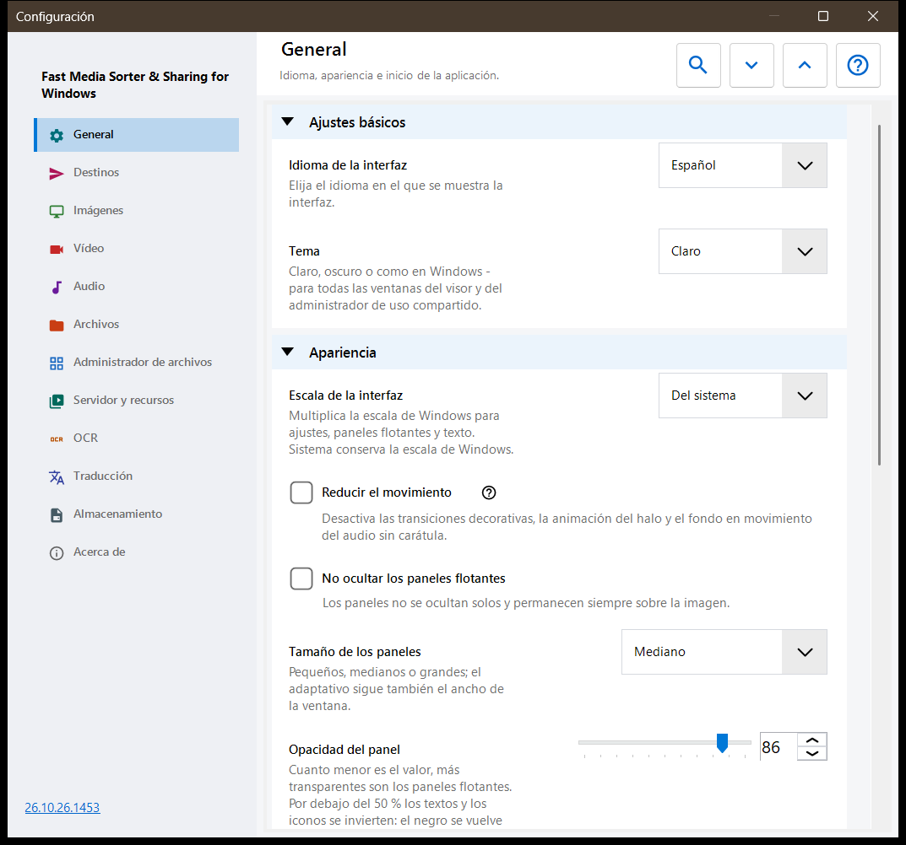
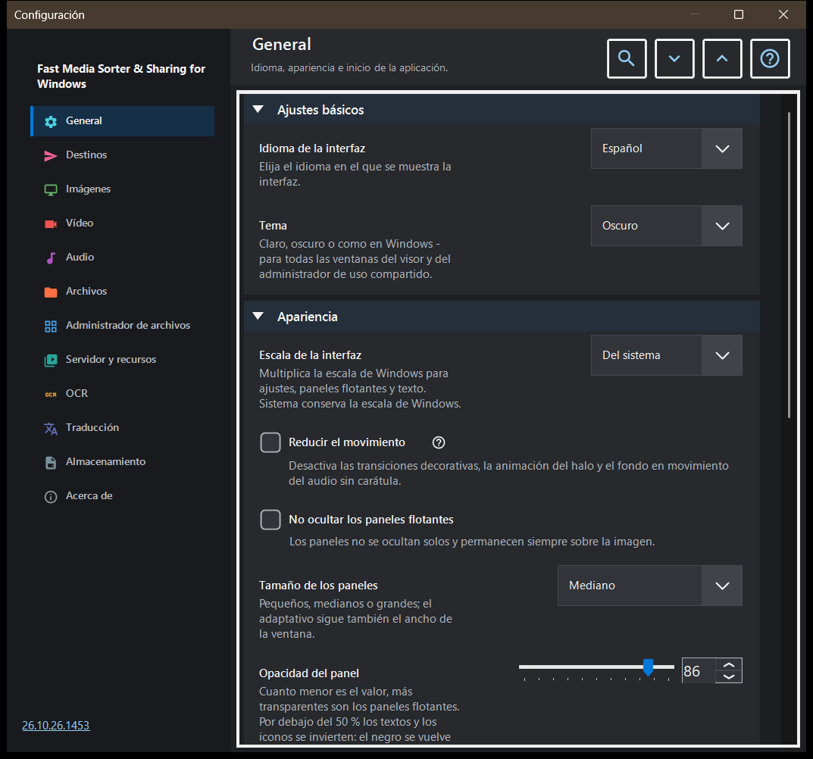

Configuración
Configuración
Para qué sirve
La ventana Configuración reúne todas las opciones del visor. Se abre con F2, con el botón «Configuración» de la barra de herramientas o desde el administrador de archivos del panel de imágenes con su botón «Ajustes..», que salta directamente a la página Administrador de archivos. Las páginas se enumeran en una barra lateral a la izquierda y los grupos de una página se pueden contraer.


En este orden
- Elija una página en la barra lateral, o escriba una palabra en «Buscar ajustes» para encontrar una opción.
- Use «Expandir todo» y «Contraer todo» para abrir o contraer todos los grupos de la página.
- Cambie las opciones que necesite.
- Pulse Esc para cerrar la ventana.
Los elementos
General
Idioma y tema, y después el aspecto de los paneles flotantes: escala de la interfaz, movimiento reducido, fijación, tamaño, opacidad, esquinas, la información superpuesta y el ocultar el cursor del ratón; el botón «Devolver los paneles a su sitio» devuelve a su lugar habitual todos los paneles movidos. El grupo Inicio decide qué ocurre al arrancar (abrir al inicio, continuar con el último archivo, permitir ventanas nuevas) y contiene «Mostrar otra vez los pasos de bienvenida», que vuelve a abrir la configuración inicial. El grupo Ajustes avanzados exporta e importa los ajustes adicionales y restablece los valores predeterminados.
Destinos
Las diez carpetas a las que las teclas 1-9 y 0 mueven un archivo; Shift con un dígito de la fila superior copia a la misma carpeta. La cuadrícula tiene una fila por tecla: seleccione una fila y use después «Una carpeta de este equipo..», «Recursos» (una carpeta SFTP o SMB) o «Vaciar», o arrastre una carpeta a la fila. El grupo Apariencia de la tabla de destinos fija la posición, el ancho, el tamaño del texto, la opacidad y las filas visibles de la tabla mostrada sobre la imagen, y «Tabla de destinos sobre la imagen» activa o desactiva esa tabla.
Imágenes
Cómo se abren y se ven las imágenes: escala de una imagen nueva, giro automático según la etiqueta EXIF, «Zoom con la rueda del ratón», gráficos animados mediante el reproductor de vídeo e información sobre el tamaño de la imagen, el tamaño del archivo y la fecha. Fondo de la imagen fija el color alrededor de una imagen, el Fondo en perspectiva y el halo (dinámico, animado, velocidad). Comportamiento del pase de diapositivas fija el intervalo, el orden aleatorio, si la navegación manual detiene el pase y qué hace la interfaz durante él. La parte avanzada tiene el escalado de alta calidad y el tamaño de la tarjeta de miniatura.
Vídeo
Si los archivos de vídeo participan en la navegación, la reproducción automática, la acción al final de un clip, recordar la posición y «Sonido compartido: audio y vídeo». Otros grupos contienen los idiomas preferidos de audio y subtítulos y el control de la reproducción: qué hace un solo clic, el retardo de los controles, los controles en pausa y tres pasos de salto.
Audio
Si los archivos de audio participan en la navegación, la acción al final de una pista, el volumen predeterminado e iniciar silenciado. El grupo de información y control contiene la barra de audio siempre visible, el visualizador para archivos sin carátula y el temporizador de apagado.
Archivos
Manejo de archivos: avanzar tras copiar, qué ocurre ante un conflicto de nombres y tras una copia o un movimiento, la línea de estado en las operaciones con archivos, crear una carpeta de destino que falta, «Eliminar a la Papelera» y la confirmación de eliminación. Tipos de archivo abarca subcarpetas, extensiones, documentos, el tamaño de la vista previa del texto y otros archivos. Otros grupos fijan los archivos y carpetas recientes, los límites de los archivos comprimidos y los archivos protegidos .fd-sec. Teclas y asociaciones tiene el botón «Atajos de teclado», que abre la ventana de teclas de acceso rápido, y las asociaciones de archivos para imágenes y vídeo.
Administrador de archivos
Opciones del administrador de archivos del panel de imágenes: Modo de visualización (mosaicos o lista), Filtro de contenido, archivos ocultos y la acción para los archivos que no son multimedia. El grupo Ubicaciones elige qué ubicaciones se muestran (locales, recursos, dispositivos) y tiene «Recordar ordenación».
Servidor y recursos
La lista Servidores y carpetas de red contiene los recursos SFTP y SMB que el visor puede explorar y usar como destinos. El grupo Android / SFTP sirve para publicar carpetas de este equipo por SFTP para la aplicación Android; contiene la guía de conexión y el botón «Gestionar el servidor SFTP para el cliente Android..». Cada entrada de un servidor de intercambio tiene «Guardar como ESTÁNDAR..» y «Leer ESTÁNDAR..» mientras está conectada y su servidor guarda un ESTÁNDAR de configuración: el primero guarda en el servidor los grupos de configuración marcados como ESTÁNDAR de tu cuenta, el segundo lleva a este equipo los valores de los grupos marcados. Las rutas, contraseñas, claves y tamaños de ventana se quedan en este equipo, el operador del servidor puede leer un ESTÁNDAR y los cambios posteriores aquí siguen siendo locales hasta que vuelvas a leer el ESTÁNDAR.
OCR
«Activar OCR» activa el reconocimiento de texto, y «Ejecutar automáticamente» deja que se ejecute solo. El grupo Reconocimiento de texto fija el idioma de origen, la calidad, el modo y la descarga de los datos de idioma.
Traducción
Elija el servicio («Servicio de traducción») y el idioma de destino («Idioma de traducción»); otros campos contienen la dirección del servicio, el servidor Ollama local, el modelo y la clave de API. El grupo Traducción sobre la imagen fija la opacidad y la visibilidad del panel de traducción sobre la imagen.
Almacenamiento
Límites de caché con un botón para vaciar cada una: imágenes decodificadas, miniaturas del panel de imágenes, archivos comprimidos y recursos de red. La caché en disco del OCR tiene «Almacenar los resultados en disco», su propio límite y un botón para vaciarla.
Acerca de
Información del producto y enlaces: Actualizaciones, Restablecer ajustes, Proyectos relacionados, Ayuda del programa, Sitio del proyecto, GitHub, Versiones, Política de privacidad, Licencia MIT y Componentes de terceros y licencias. «Enviar los registros al autor» muestra un cuadro de consentimiento que enumera lo que entra en el archivo comprimido y luego lo entrega a su programa de correo; el programa no abre ninguna conexión de red para ello.
Documentos
Activa el lector PDF por separado de los filtros. Elige una página, desplazamiento continuo o dos páginas, colores, zoom, búsqueda y límites de caché. Los botones de página cambian páginas y los de archivo cambian archivos. Los controles de texto reciben B/N, cifras y Supr; Esc vuelve a la vista. Restablecer la apariencia conserva posiciones y marcadores con nombre. La lectura en voz alta usa voces de Windows instaladas. Las contraseñas quedan en la sesión. Una copia temporal local permite mover el original. La exportación normal omite historial, marcadores y ajustes por documento. Los archivos de texto tienen sus propios grupos. «Lectura completa de archivos de texto» los abre con fuentes, temas, números de línea y búsqueda; un archivo que supera el límite de edición se lee por partes. «Edición de archivos de texto» añade Ctrl+E: al guardar se conserva la codificación y los cambios sin guardar quedan en un borrador cifrado. «Abrir como texto» en el menú de un archivo muestra como texto cualquier otro archivo. «Traducción de archivos de texto» añade al panel del documento un botón doc-html-translate: el texto seleccionado o todo el texto del editor se pasa como copia, el archivo no se guarda ni se modifica y la página se abre en el navegador; también se puede enviar el archivo guardado. El grupo doc-html-translate hace que el botón doc-html-translate de PDF y EPUB pregunte qué hacer con el documento: abrir la página en el navegador y traducirla allí, solo convertir, traducir con tu modelo local de Ollama o traducir con Google dentro del límite de gasto fijado aquí, y cada ejecución de pago se aprueba antes. Cada ejecución trabaja en su propia carpeta de la caché del visor, nunca junto al documento; la página se abre en el navegador o sobre el documento, y el menú del resultado del panel del documento abre el original, guarda el resultado o procesa el documento de nuevo.